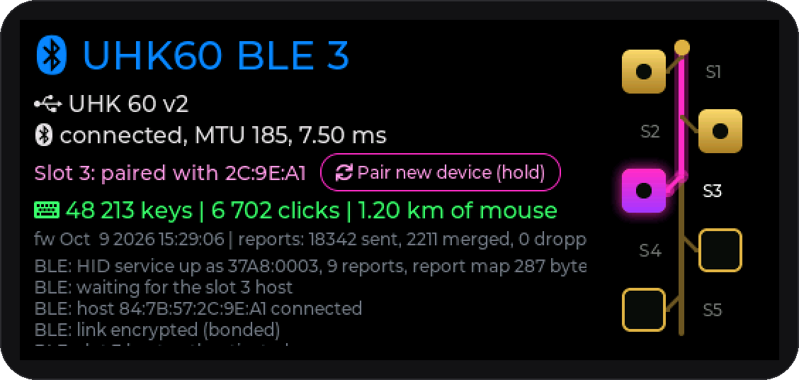
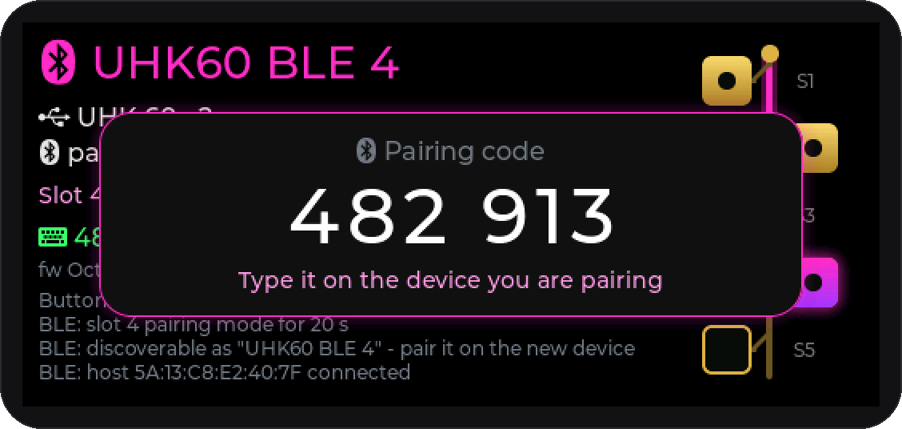
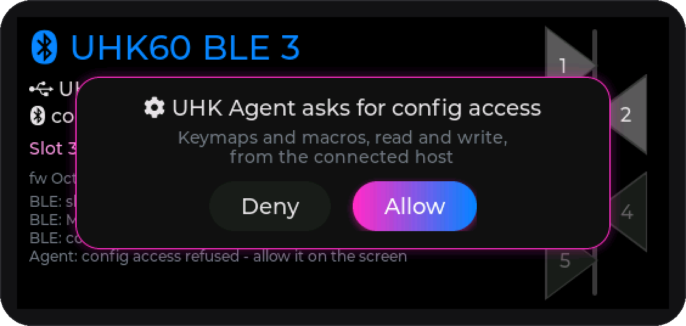
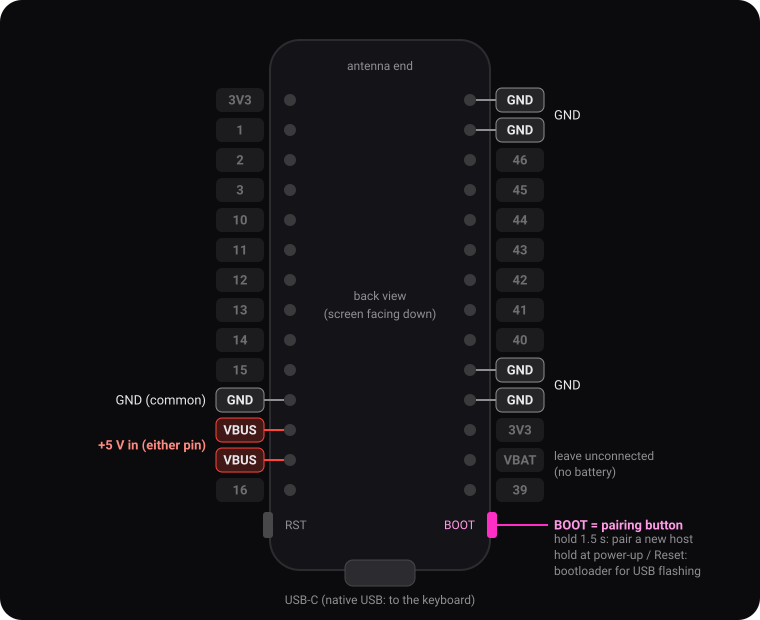
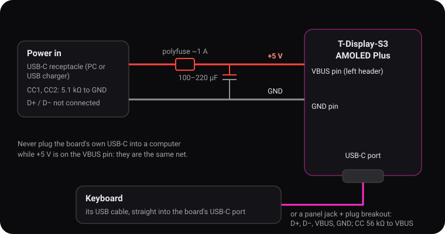

UHK 60 v2 → Bluetooth adapter
Flash the adapter firmware onto a LilyGo T-Display-S3 AMOLED Plus straight from the browser. The board becomes the keyboard's USB host and a Bluetooth keyboard and mouse for up to five computers, tablets or phones, and UHK Agent works over Bluetooth too.

This browser cannot talk to serial ports. Use Chrome, Edge or Opera on a desktop computer.
The installer needs a secure page (https).
Install
- Unplug the keyboard and the adapter's 5 V supply, then plug the board's USB-C straight into the computer with a data cable.
- Click Install firmware and pick the board's port (usually “USB JTAG/serial debug unit”).
- No port in the list? The firmware is already running and uses the USB port for the keyboard. Hold BOOT, press Reset, release BOOT, then try again.
- When it finishes and the screen stays black, press Reset once.
First run
- Wire the 5 V supply (see below) and plug the keyboard into the board's USB-C port. The adapter reads the keyboard's layout once and remembers it.
- Pick a slot (tap its pad on the right), hold BOOT until the bar along the bottom fills, then pair UHK60 BLE 1…5 on the computer or phone within 20 s and type the 6-digit code the adapter shows.


Build the adapter
The adapter is just the board and a 5 V supply: +5 V on the board's VBUS pin, and the keyboard plugged into its USB-C port. The USB-C port's VBUS is on the same net as the VBUS pin, so the keyboard is powered from there too.
Parts
- LilyGo T-Display-S3 AMOLED Plus.
- A 5 V input: a USB 2.0 USB-C receptacle (for example GCT USB4085-GF-A) with two 5.1 kΩ resistors, so any USB port or charger can power the adapter. Any other 5 V source works too.
- A resettable fuse (polyfuse) of about 1 A and a 100–220 µF capacitor (10 V or more).
- For an enclosure (optional): a panel USB-C receptacle for the keyboard, a USB-C plug breakout that goes into the board's port, and two 56 kΩ resistors.
Header pins

| Pin | Connect to |
|---|---|
| VBUS (left, either of the two) | +5 V, after the fuse |
| GND | ground of the 5 V supply (and of the keyboard panel jack, if you use one) |
| USB-C port | the keyboard: its cable directly, or the plug breakout of a panel jack |
| BOOT button | nothing to wire: it's the pairing button (hold 1.5 s), and held at power-up it starts the bootloader for flashing |
Leave the other pins alone: GPIO1–3, 11–15 and 21 are used by the PMU, touch, RTC and SD card on the board.
Wiring

- Power. Run the input's +5 V through the polyfuse to one of the board's VBUS pins, and its ground to a GND pin. Put the 100–220 µF capacitor across +5 V and GND close to the board. On a USB-C input jack, connect a 5.1 kΩ resistor from CC1 to GND and another from CC2 to GND, so chargers and USB-C to USB-C cables supply 5 V. Its D+ / D− stay unconnected.
- Keyboard. Plug the keyboard's USB cable into the board's USB-C port. In an enclosure, wire a panel USB-C jack to a USB-C plug breakout in the board's port: D+, D−, VBUS and GND straight through, a 56 kΩ resistor from CC1 to VBUS and another from CC2 to VBUS, and join A6 with B6 (D+) and A7 with B7 (D−). Keep the D+ / D− wires short and together.
The board's USB-C VBUS and its VBUS pins are the same net. Never plug the board's USB-C into a computer while +5 V is on the VBUS pin: that connects two 5 V supplies to each other. To flash the board by cable, disconnect the 5 V supply and the keyboard first (then hold BOOT while you plug it in), or update it over Bluetooth.
The UHK asks for up to 500 mA, and the board adds 100–250 mA. Use a USB 3 port (900 mA) or a charger rather than a USB 2.0 port.
Updates
Later versions can also be installed over Bluetooth from Windows, without touching the cable:
pio run -t ota in the project. See the project README for details.